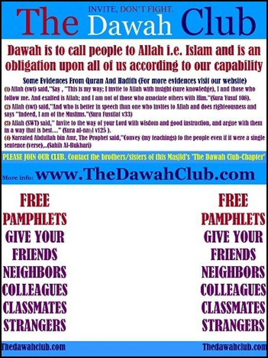
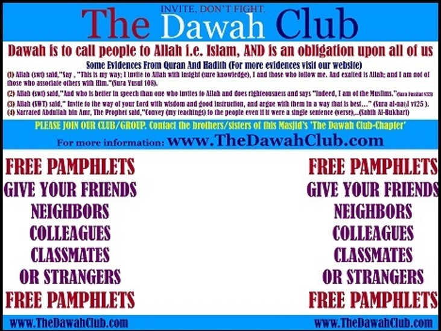
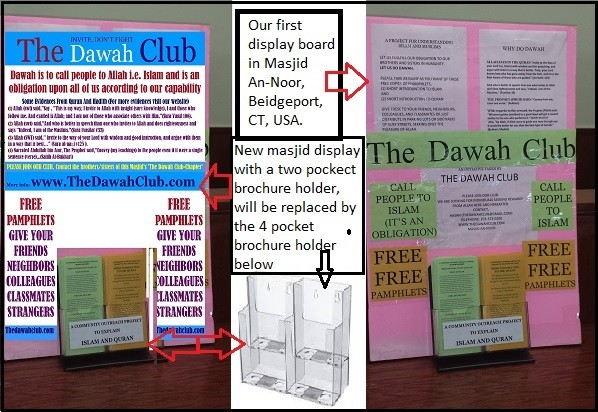
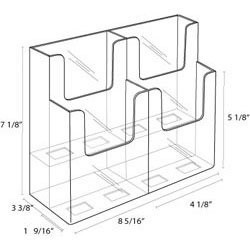
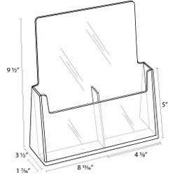
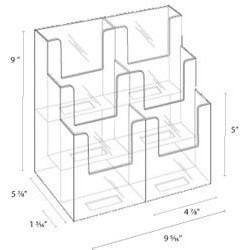
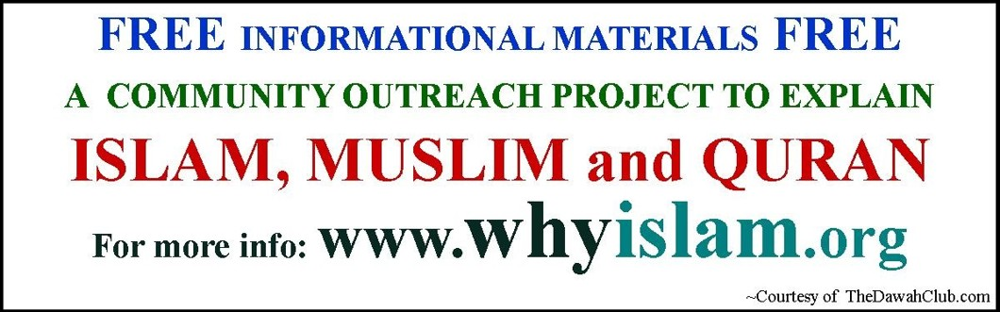

MASJID DAWAH DISPLAY SETUP
DAWAH DISPLAY BOARD OPTION #1
The recommended dimensions are 24" × 18" (W × H). This size is ideal for masjid display boards.
We typically use:
• Corrugated plastic sign (approximately $10)
• Polystyrene board sign (approximately $30)
Prices are generally lower when ordering in larger quantities.
We usually attach a brochure/pamphlet holder in the middle of the sign. Besides holding the pamphlets, it also helps support and balance the display board.
Another option is to print a poster or sticker and mount it on a board of your choice. Look for a local copy, print, or sign shop, or order online.
Contact us for purchasing tips and additional details.

DAWAH DISPLAY BOARD OPTION #2
Another popular size is 18" × 24" (W × H).
This option uses the same materials and printing methods as Option #1 but requires slightly more table or counter space.
Many online printing companies occasionally offer excellent deals on yard signs, which are commonly available in this size and can easily be converted into a masjid dawah display board.
Contact us for additional recommendations and money-saving tips.

MASJID DAWAH DISPLAY EXAMPLE
A complete masjid dawah display consists of:
• A Dawah Display Board
• A 4-pocket or 6-pocket brochure holder
• Dawah pamphlets placed inside each pocket
The display should be positioned in a location that is clearly visible and easily accessible to everyone entering the masjid.

PAMPHLET HOLDERS
Pamphlet holders (also called brochure holders) are essential for dawah activities. They are used on masjid dawah display boards and can also be placed independently in Muslim-owned businesses, offices, and shops.
Please do not download images from this page due to quality concerns. Contact us for products in stock, bulk purchases, or image files. Images are also available on our Facebook page:
https://www.facebook.com/thedawahclub
4-POCKET BROCHURE (PAMPHLET) HOLDER

Approximate dimensions:
4" × 9" × 8" (W × L × H)
This is the brochure holder we currently use on our masjid dawah display boards. It is also commonly placed in Muslim-owned shops, offices, and businesses.
It is ideal for our current pamphlet collection, allowing four different pamphlets to be displayed at once (English and Spanish versions of two pamphlets).
Typical cost is approximately $7.
2-POCKET BROCHURE (PAMPHLET) HOLDER

Approximate dimensions:
3.5" × 9" × 9" (W × L × H)
This holder is commonly used in Muslim-owned businesses, offices, and shops.
Typical cost is approximately $4.
6-POCKET BROCHURE (PAMPHLET) HOLDER

Approximate dimensions:
6" × 9" × 9" (W × L × H)
This brochure holder is suitable for masjid dawah display boards and provides additional space for organizing and stacking more dawah pamphlets.
Typical cost is approximately $7.
STICKER / LABEL FOR BROCHURE (PAMPHLET) HOLDER
Use a professionally printed sticker or label on the brochure holder to clearly identify the dawah materials and encourage visitors to take a pamphlet.
This creates a more organized, attractive, and welcoming display.
